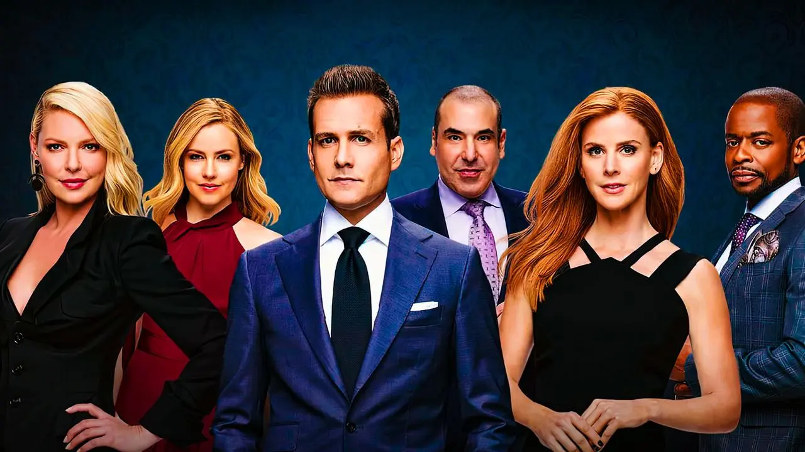

Trailer
Sinopse
Suits mergulha no mundo de alta pressão de um escritório de advocacia corporativa de Manhattan, onde o lendário advogado Harvey Specter contrata o brilhante, mas sem diploma, Mike Ross. Mike possui uma memória fotográfica e um conhecimento enciclopédico de leis, mas nunca frequentou a faculdade de direito. Juntos, eles formam uma dupla imbatível, resolvendo casos complexos enquanto lutam para manter o segredo de Mike. A série explora temas de lealdade, ambição, ética e as complexas relações interpessoais dentro da firma Pearson Hardman (mais tarde Pearson Specter Litt).
Elenco
Imagens
